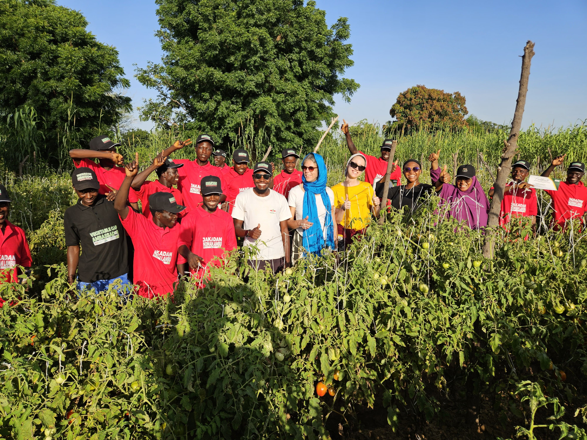
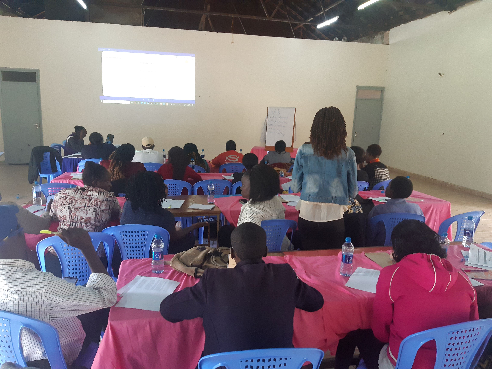
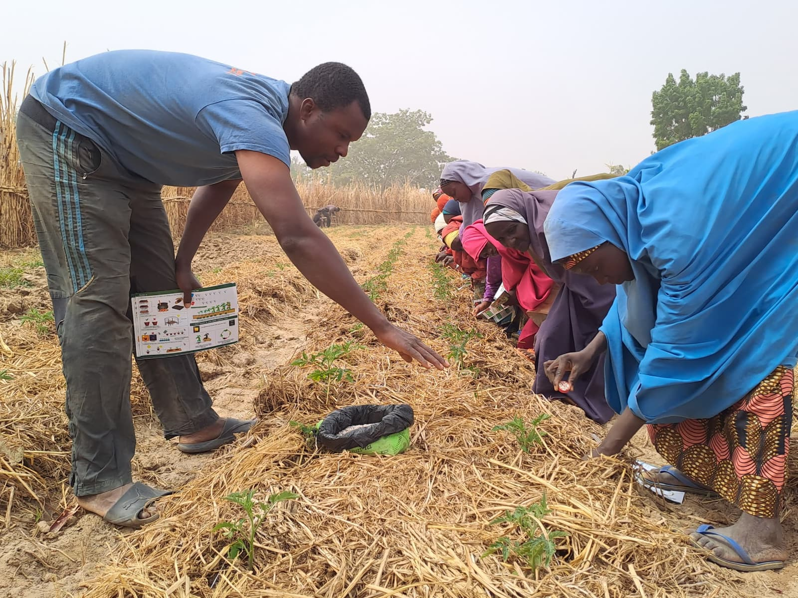

Profile
Development Economics PhD candidate with experience in academic and applied research. Experienced in coordinating field experiments across Nigeria, Uganda, Kenya, and international development programmes, programming digital surveys, supervising enumerators, analysing mixed-methods data, translating evidence into research outputs, and supporting programme delivery. Brings academic and applied research experience from WUR, IFPRI, IITA, and Nigerian higher education (UNIZIK), with thematic expertise in gender, agriculture, climate information services, poverty and rural development, and smallholder livelihoods.
Core Expertise
- Monitoring, evaluation and learning (MEL)
- Field research operations
- Survey design and programming
- Quantitative and qualitative data collection
- Econometric analysis
- Project management
- Stakeholder engagement
Research Interests
- Development economics
- Gender and intrahousehold decision-making
- Agricultural extension
- Smallholder livelihoods
- Rural finance
- Poverty and rural development
- Climate information services
- Impact evaluation
- Behavioural and field experiments
Education
MSc (Cum laude) in Management, Economics and Consumer Studies
BSc (First Class Honours) in Cooperative Economics and Management
Publications and Research Outputs
- Galiè, A., Kramer, B., Spielman, D. J., Kawarazuka, N., Rietveld, A. M., & Aju, S. (2025). Inclusive and gender-transformative seed systems . Agricultural Systems, 226, 104320.
- Aju, S., Kramer, B., & Waithaka, L. (2022). Edutainment, gender and intra-household decision-making in agriculture: A field experiment in Kenya . International Food Policy Research Institute (IFPRI).
- Timu, A., Aju, S., & Kramer, B. (2021). Toolkit for Cost-Benefit Analysis of Climate Information Services: An outline . AICCRA Info Note. Accelerating Impacts of CGIAR Climate Research for Africa (AICCRA).
- Aju S. I., & Adeosun, O. T. (2021). Constraints to participation in the management of cooperative societies: Insights for women in Awka community . Journal of Enterprising Communities: People and Places in the Global Economy.
- Adeosun, O. T., Shittu, A. I., & Aju S. I. (2021). Constraints to participation in the management of cooperative societies: Insights for women in Awka community . Journal of Enterprising Communities: People and Places in the Global Economy.
Working Papers
- Aju, S., ter Steeg, E., Bulte, E., Grimm, M., & van den Berg, M. (2026). Signaling Trustworthiness in Agricultural Input Markets: Experimental Evidence from Nigeria.
- Aju, S., Berber Kramer, B., & van den Berg, M. (2026). Edutainment, Gender, and Intra-household Decision-making in Agriculture: A Field Experiment in Kenya. Manuscript in preparation.
- Aju, S., ter Steeg, E., & van den Berg, M. (2026). Making Expertise Visible: Experimental Evidence from Agricultural Extension in Nigeria.
- ter Steeg, E., Aju, S., & van den Berg, M. (2026). Vegetables as a pathway out of poverty? The adoption and impact of improved varieties and good agricultural practices following market-driven agricultural extension.
Skills
- Stata
- R
- Nvivo
- Atlas.ti
- ODK
- SurveyCTO
- KoboToolbox
- LATEX
- GAMS
- Microsoft Office
Curriculum Vitae
View or download my complete academic CV, including research experience, publications, teaching, and professional experience.
Fieldwork


